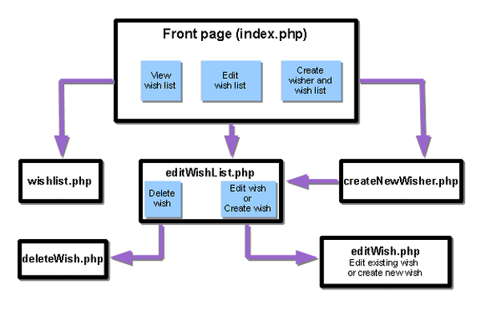

Apache NetBeans
Apache NetBeansJust released!
PHPを使用するデータベース駆動型アプリケーションの作成
| This tutorial needs a review. You can open a JIRA issue, or edit it in GitHub following these contribution guidelines. |
レッスン2: アプリケーションの設計。データベースからの読取り

Figure 1. このページの内容は、NetBeans IDE 7.2、7.3、7.4および8.0に適用されます
このレッスンでは、アプリケーションを開発するためにPHPプロジェクトを作成および構成し、アプリケーション内のページのリストを作成して、それらの関係を定義します。また、基本的なアプリケーションの機能を開発し、レッスン1のサンプル・データベースに入力したデータに対してテストします。
このレッスンで記述するPHPコードは次の機能を実行します。
-
ユーザーが入力した個人の名前を取得します。
-
その個人が実際にデータベース内に存在するかどうかを確認します。個人がデータベースに存在しない場合はエラー・メッセージを表示して終了します。
-
その個人のウィッシュ表を表示します。
現在のドキュメントは、PHP向けのNetBeans IDEでのデータベース駆動型アプリケーションの作成というチュートリアルの一部です。
PHPプロジェクトの作成
「ファイル」>「新規プロジェクト」(WindowsおよびLinuxでは[Ctrl]-[Shift]-[N]、MacOSでは[⌘]-[Shift]-[N])を選択します。「wishlist」という名前の新しいPHPプロジェクトを作成します。PHPプロジェクトを作成すると、PHPプロジェクトにはデフォルトでインデックス・ファイル index.php が含まれます。PHPプロジェクトの作成と構成については、PHPプロジェクトの設定を参照してください。
ページ・フロー図の定義
アプリケーションのスコープは、次のユース・ケースをカバーしています。
-
ユーザーが、個人のウィッシュ・リストを表示する。
-
ユーザーを新規ウィッシャとして登録する。
-
ユーザーがログインして自分のウィッシュ・リストを作成する。
-
ユーザーがログインして自分のウィッシュ・リストを編集する。
この基本的な機能をカバーするには、次のPHPファイルを実装する必要があります。
-
ログイン、登録、および他のユーザーのウィッシュ・リストに切り替えるためのフロント・ページであるindex.php。
-
特定のウィッシャのウィッシュ・リストを表示するためのwishlist.phpページ。
-
ウィッシャとして登録するためのcreateNewWisher.phpページ。
-
所有者がウィッシュ・リストを編集するためのeditWishList.phpページ。
-
ウィッシュを作成して編集するためのeditWish.phpページ。

準備手順が終了したので、アプリケーションの基本的な機能の実装を開始できます。ウィッシャのウィッシュ・リストの表示から始めます。この機能には検証が含まれていませんが、テスト・データをデータベースにすでに入力しているため、簡単にテストできます。この機能は、index.phpとwishlist.phpの2つのページに実装されます。
index.phpへのフォームの追加
index.phpファイルにはPHPコードが含まれていないため、簡単に次のブロックを除去できます。
``index.php`` ファイルは2つの目的で使用されます。
-
データを入力するためのコントロールがあるページを表示する。
-
入力されたデータを、データが処理される別のPHPファイルに転送する。このチュートリアルでは、データは、次の項で作成およびコーディングする
wishlist.phpという名前のファイルに渡されます。
これらのアクションはHTMLフォームを使用して実行されます。それぞれのHTMLフォームには次が含まれています。
-
ページ上のコントロールに対応するフィールドのセット。
-
ユーザーがフォームのデータを送信した後に実行されるアクション。アクションは、データを処理するページへのパスによって表現されます。
index.phpにフォームを追加するには、次を実行します。
-
「プロジェクト」ウィンドウに切り替え、プロジェクト・ノードおよび「ソース・ファイル」ノードを展開し、
index.phpファイルをダブルクリックします。index.phpファイルがメインのIDEエディタ領域で開きます。ファイルには、HTMLおよびPHPコードを入力するためのテンプレートが含まれています。
*注意: *HTMLバリデータからの警告は無視できます。
.
2. PHPブロックを除去します。index.phpファイルにはPHPコードは含まれません。
image::images/remove-php-block.png[]
3. 「ウィンドウ」メニューから、または[Ctrl]-[Shift]-[8]を押して「パレット」を開きます。
4. パレットの「HTMLフォーム」セクションで、「フォーム」を index.php の<body>セクションにドラッグ・アンド・ドロップします。
image::images/form-dnd.png[]
5. 「挿入フォーム」ダイアログが開きます。「アクション」フィールドで、フォームによるデータの転送先のファイルへのパスを入力します。このケースでは、「 wishlist.php 」と入力します。(このファイルは index.php と同じ場所に作成します。wishlist.phpの作成とアプリケーションのテストを参照。)データを転送するためのGETメソッドを選択します。フォームに対して wishList などの任意の名前を付けます。完了したら、「OK」をクリックします。
image::images/insert-form-dialog.png[]
ファイルは次のようになっています。

-
フォームの開始タグと終了タグの間に、「Show wish list of: 」というテキストを入力します。
-
パレットの「HTMLフォーム」セクションから、「テキスト入力」コンポーネントを「Show wish list of: 」の後のスペースにドラッグします。「挿入テキスト入力」ダイアログが開きます。
-
入力に
userという名前を付けます。入力タイプは「テキスト」を選択します。その他のすべてのフィールドを空白のままにし、「OK」をクリックします。 image::images/insert-text-input.png[]
ファイルは次のようになっています。

-
</form> タグの上に空白行を追加します。この空白行に、パレットの「HTMLフォーム」セクションから「ボタン」コンポーネントをドラッグ・アンド・ドロップします。
-
「挿入ボタン」ダイアログが開きます。「ラベル」フィールドに「
Go」と入力して「OK」をクリックします。 image::images/insert-button-dialog.png[] -
フォームは次のようなコードになり、違いは1つです。次のコードでは、<form>タグ内の
method属性が明示的になっています。NetBeans IDEはメソッド属性をフォームに追加しませんでしたが、この理由はGETがこの属性のデフォルト値であるためです。ただし、method属性が明示的であれば、コードが理解しやすくなる場合があります。
<form action="wishlist.php" method="GET" name="wishList">Show wish list of: <input type="text" name="user" value=""/><input type="submit" value="Go" /></form>フォームの次の要素に注意してください。
-
開始の<form>タグには
action属性が含まれています。action属性は、フォームがデータを転送するファイルを指定します。このケースでは、ファイルの名前はwishlist.phpで、index.phpと同じフォルダに存在します。(このファイルは、wishlist.phpの作成とアプリケーションのテストの項で作成します。) -
開始の<form>タグには、データの転送に適用されるメソッド(GET)も含まれています。PHPは
method属性の値に応じて、このフォームによって渡される値について$_GETまたは$_POST配列を使用します。このケースでは、PHPは$_GETを使用します。 -
text入力コンポーネント。このコンポーネントは、表示するウィッシュ・リストのユーザー名を入力するためのテキスト・フィールドです。テキスト・フィールドの開始値は、空の文字列です。このフィールドの名前はuserです。PHPはフィールドの値の配列を作成するとき、フィールドの名前を使用します。この場合、このフィールドの値の配列は、htmlentities($_GET["user"])です。 -
値が「Go」の
submit入力コンポーネント。「submit」タイプは、入力フィールドがボタンとしてページに表示されることを意味します。値「Go」はボタンのラベルです。ユーザーがボタンをクリックすると、textコンポーネント内のデータはaction属性で指定されるファイルに転送されます。
wishlist.phpの作成とアプリケーションのテスト
index.phpへのフォームの追加では、ユーザーが表示するウィッシュ・リストの所有者の名前をユーザーが送信するフォームを作成しました。名前は wishlist.php ページに渡されます。ただし、このページは存在しません。 index.php を実行すると、名前を送信したときに「404: File Not Found」エラーを受け取ります。この項では、 wishlist.php を作成し、アプリケーションをテストします。
wishlist.phpを作成してアプリケーションをテストするには、次を実行します。
-
作成した「wishlist」プロジェクト内の「ソース・ファイル」ノードでマウスの右ボタンをクリックし、コンテキスト・メニューから「新規」>「PHPのWebページ」を選択します。新規PHPのWebページ・ウィザードが開きます。
-
「ファイル名」フィールドに「
wishlist」と入力し、「終了」をクリックします。 -
「ソース」ノードでマウスの右ボタンをクリックしてコンテキスト・メニューから「プロジェクトの実行」をするか、または、プロジェクトをメインとして設定している場合は、ツールバーの「メイン・プロジェクトの実行」アイコンimage::images/run-main-project-button.png[]をクリックします。 image::images/index-php-works.png[]
-
「Show wish list of:」編集ボックスに「Tom」と入力し、「Go」をクリックします。URLがhttp://localhost:90/Lesson2/wishlist.php?user=tomの空のページが表示されます。このURLは、メイン・ページが正しく動作していることを示します。
接続の確立とウィッシャIDの取得
この項では最初に、データベースへの接続を作成するコードを wishlist.php に追加します。次に、名前が index.php フォームに入力されたウィッシャのID番号を取得するコードを追加します。
-
wishlist.phpファイルをダブルクリックします。表示されるテンプレートは、index.phpとは異なります。このファイルはHTMLコードも含むため、ファイルの開始と終わりに<html></html>タグおよび<body></body>タグがあります。
<!DOCTYPE html><html><head><meta http-equiv="Content-Type" content="text/html; charset=UTF-8"><title></title></head><body><?php// put your code here?></body></html>-
タイトルを表示するには、開始の<body>タグの直後で、生成された<?phpタグの前に次のコード・ブロックを入力します。
Wish List of <?php echo htmlentities($_GET["user"])."<br/>";?>コードは次のようになります。
<body>Wish List of <?php echo htmlentities($_GET["user"])."<br/>";?><?php// put your code here</body>PHPコード・ブロックは、「user」フィールドの取得メソッド(GET)を介して受け取ったデータを表示します。このデータは、テキスト・フィールド「user」に、ウィッシュ・リストの所有者であるTomの名前が入力されている index.php から転送されます。wishlist.phpが正しく動作していることを確認するために、index.phpのテストの手順を繰り返します。
image::images/wishlist-php-title-works.png[]
-
テンプレートPHPブロックのコメント付きセクションを削除します。その場所に、次のコードを入力するか、または貼り付けます。このコードはデータベースへの接続を開きます。
MySQLデータベースの場合:
$con = mysqli_connect("localhost", "phpuser", "phpuserpw");if (!$con) {exit('Connect Error (' . mysqli_connect_errno() . ') '. mysqli_connect_error());}//set the default client character set mysqli_set_charset($con, 'utf-8');Oracleデータベースの場合:
$con = oci_connect("phpuser", "phpuserpw", "localhost/XE", "AL32UTF8");
if (!$con) {
$m = oci_error();
exit('Connect Error ' . $m['message']);
}これはデータベースへの接続を開くためのコードで、エラーが発生した場合はエラー・メッセージが表示されます。
Oracleデータベース・ユーザーへの注意: oci_connect コマンド内のデータベース接続を変更することが必要になる場合があります。標準の構文は「ホスト名/サービス名」です。このスニペット内でのOracle XEデータベースへの接続は、この構文に従って「localhost/XE」です。
注意: mysqli関数またはOCI8関数のいずれかについて、NetBeans IDEのコード補完を使用できます。
![]image::images/codecompletion-oci.png[](images/codecompletion.png)
4. コードの下にデータベースへの接続が開き、同じPHPブロックに次のコードを入力するか、または貼り付けます。このコードは、ウィッシュ・リストがリクエストされたウィッシャのIDを取得します。ウィッシャがデータベースに存在しない場合、コードはプロセスを終了し、エラー・メッセージを表示します。
MySQLデータベースの場合:
mysqli_select_db($con, "wishlist");$user = mysqli_real_escape_string($con, htmlentities($_GET["user"]));$wisher = mysqli_query($con, "SELECT id FROM wishers WHERE name='" . $user . "'");if (mysqli_num_rows($wisher) < 1) {
exit("The person " . htmlentities($_GET["user"]) . " is not found. Please check the spelling and try again");
}$row = mysqli_fetch_row($wisher);$wisherID = $row[0];mysqli_free_result($wisher);Oracleデータベースの場合: (oci8には mysqli_num_rows と同等のものが存在しません)
$query = "SELECT id FROM wishers WHERE NAME = :user_bv";
$stid = oci_parse($con, $query);
$user = $_GET['user'];
oci_bind_by_name($stid, ':user_bv', $user);
oci_execute($stid);
//Because user is a unique value I only expect one row
$row = oci_fetch_array($stid, OCI_ASSOC);
if (!$row) {
exit("The person " . $user . " is not found. Please check the spelling and try again" );
}
$wisherID = $row['ID'];
oci_free_statement($stid);データは、$con接続を介して wishlist データベースから選択されます。選択の基準は、index.phpから「user」として受け取った名前です。
次に、SQL文「 SELECT 」の構文を簡単に説明します。
-
SELECTの後に、データの取得元のフィールドを指定します。アスタリスク(*)はすべてのフィールドを表します。
-
FROM節の後に、データを取得する表の名前を指定します。
-
WHERE節はオプションです。フィルタ条件を指定します。
mysqli問合せは結果オブジェクトを返します。OCI8は実行された文を返します。いずれの場合も、実行された問合せの結果から1行をフェッチし、ID行の値を抽出し、それを変数 $wisherID に格納します。
最後に、mysqli結果またはOCI8文を解放します。接続が物理的に切断される前に、接続を使用するすべてのリソースを解放する必要があります。そうしないと、 mysqli_close() コールまたは oci_close() コールの後に $con が使用できない場合でも、PHPの内部参照カウント・システムは、ベースとなるDB接続を開き続けます。
*セキュリティ上の注意: *MySQLの場合、「 htmlentities($_GET["user"]) 」パラメータは、SQLインジェクション攻撃を避けるためにエスケープされます。SQLインジェクションに関するWikipediaおよびmysql_real_escape_stringのドキュメントを参照してください。このチュートリアルのコンテキストでは、有害なSQLインジェクションのリスクはありませんが、そのような攻撃のリスクになるようなMySQL問合せの文字列はエスケープすることをお薦めします。OCI8では、バインド変数によってこれを回避します。
PHPブロックはこれで完了です。MySQLデータベースを使用している場合、 wishlist.php ファイルは次のようになります。
Wish List of <?php echo htmlentities($_GET["user"]) . "<br/>"; ?><?php$con = mysqli_connect("localhost", "phpuser", "phpuserpw");
if (!$con) {
exit('Connect Error (' . mysqli_connect_errno() . ') '
. mysqli_connect_error());
}//set the default client character set
mysqli_set_charset($con, 'utf-8');
mysqli_select_db($con, "wishlist");
$user = mysqli_real_escape_string($con, htmlentities($_GET["user"]));
$wisher = mysqli_query($con, "SELECT id FROM wishers WHERE name='" . $user . "'");
if (mysqli_num_rows($wisher) < 1) {
exit("The person " . htmlentities($_GET["user"]) . " is not found. Please check the spelling and try again");
}
$row = mysqli_fetch_row($wisher);
$wisherID = $row[0];
mysqli_free_result($wisher);
?>Oracleデータベースを使用している場合、 wishlist.php ファイルは次のようになります。
Wish List of <?php echo htmlentities($_GET["user"]) . "<br/>"; ?>
<?php
$con = oci_connect("phpuser", "phpuserpw", "localhost/XE", "AL32UTF8");
if (!$con) {
$m = oci_error();
exit('Connect Error ' . $m['message'];
exit;
}
$query = "SELECT id FROM wishers WHERE name = :user_bv";
$stid = oci_parse($con, $query);
$user = htmlentities($_GET["user"]);
oci_bind_by_name($stid, ':user_bv', $user);
oci_execute($stid);//Because user is a unique value I only expect one row
$row = oci_fetch_array($stid, OCI_ASSOC);
if (!$row) {
exit("The person " . $user . " is not found. Please check the spelling and try again" );
}
$wisherID = $row["ID"];
oci_free_statement($stid);
?>アプリケーションのテストで無効なユーザーを入力すると、次のメッセージが表示されます。

ウィッシュ表の表示
この項では、ウィッシャに関連付けられたウィッシュのHTML表を表示するコードを追加します。ウィッシャは、前の項のコードで取得したIDによって識別されます。
-
PHPブロックの下に、次のHTMLコード・ブロックを入力するか、または貼り付けます。このコードは、表を開き、境界線の色を指定し(黒)、「Item」列および「Due Date」列を持つ表ヘッダーを「描画」します。
<table border="black">
<tr>
<th>Item</th>
<th>Due Date</th>
</tr>
</table></table>タグが表を閉じます。 2. 次のPHPコード・ブロックを、終了</table>タグの前に入力します。
MySQLデータベースの場合:
<?php$result = mysqli_query($con, "SELECT description, due_date FROM wishes WHERE wisher_id=" . $wisherID);while ($row = mysqli_fetch_array($result)) {echo "<tr><td>" . htmlentities($row["description"]) . "</td>";echo "<td>" . htmlentities($row["due_date"]) . "</td></tr>\n";}mysqli_free_result($result);mysqli_close($con);?>Oracleデータベースの場合:
<?php$query = "SELECT description, due_date FROM wishes WHERE wisher_id = :id_bv";$stid = oci_parse($con, $query);oci_bind_by_name($stid, ":id_bv", $wisherID);oci_execute($stid);while ($row = oci_fetch_array($stid)) {echo "<tr><td>" . htmlentities($row["DESCRIPTION"]) . "</td>";echo "<td>" . htmlentities($row["DUE_DATE"]) . "</td></tr>\n";}oci_free_statement($stid);oci_close($con);?>コード内は次のようになっています。
-
SELECT問合せは、ウィッシャのID(ステップ4で取得済)を使用して、指定したウィッシャに対するウィッシュの期日およびウィッシュを取得し、そのウィッシュと期日を配列$resultに格納します。
-
ループは、$result配列が空でない間、この配列の項目を表の行として表示します。
-
<tr></tr>タグは行を形成し、<td></td>タグは行内のセルを形成し、\nは新しい行を開始します。
-
htmlentities関数は、HTMLエンティティと等価な意味を持つすべての文字を、HTMLエンティティに変換します。これは、クロスサイト・スクリプティングの防止に役立ちます。 -
最後の関数はすべてのリソース(mysqli結果およびOCI8文)を解放し、データベース接続を切断します。接続が物理的に切断できるようになる前に、接続を使用するすべてのリソースを解放する必要があります。そうしないと、
oci_close()コールまたはmysqli_close()コールの後に接続が使用できない場合でも、PHPの内部参照カウント・システムは、ベースとなるDB接続を開き続けます。
*注意: *データベース表の作成時に指定したとおりに、データベース・フィールドの名前を入力していることを確認してください。Oracleの場合、列名はデフォルトで大文字で返されます。
-
アプリケーションをテストするには、index.phpのテストの項の説明に従ってプロジェクトを実行します。 image::images/wishlist-php-works.png[]
現在のレッスン完了後のアプリケーション・ソース・コード
便利なリンク
HTML、PHP、およびMySQLやOracleデータベースの使用については、次を参照してください。
users@php.netbeans.orgメーリング・リストに登録することによって、NetBeans IDE PHP開発機能に関するご意見やご提案を送信したり、サポートを受けたり、最新の開発情報を入手したりできます。